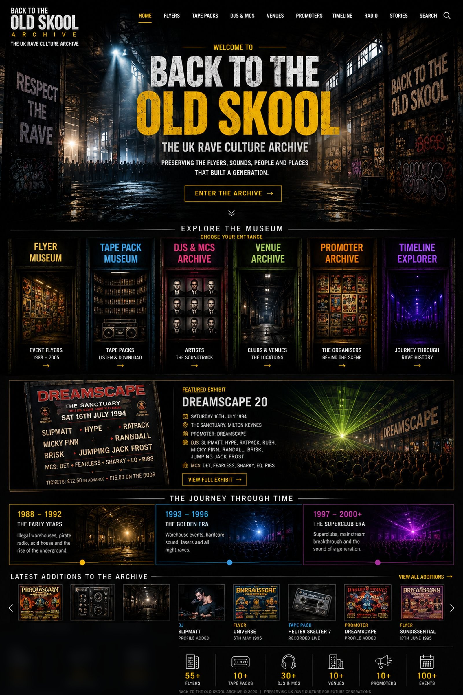

Skip to archive links
Back to the Old Skool
Archive
Menu
Home
Flyers
Tape Packs
DJs & MCs
Venues
Promoters
Timeline
Radio
Stories
Search
Back to the Old Skool Archive

Home
Flyers
Tape Packs
DJs and MCs
Venues
Promoters
Timeline
Radio
Stories
Search
Enter the archive
Flyer Museum
Tape Pack Museum
DJ and MC Archive
Venue Archive
Promoter Archive
Timeline Explorer
Featured Dreamscape exhibit
Explore 1988 to 1992
Explore 1993 to 1996
Explore 1997 to 2000 and beyond
Latest additions
Contributor credits
Choose your entrance
Explore the museum
Flyer Museum
Original artwork and event history
Tape Pack Museum
Artwork, recordings and line-ups
DJ & MC Archive
Artists, careers and appearances
Venue Archive
Warehouses, clubs and arenas
Promoter Archive
The organisations behind the events
Timeline Explorer
Travel through UK rave history
Pirate Radio
Raver Stories
Contributors
Search